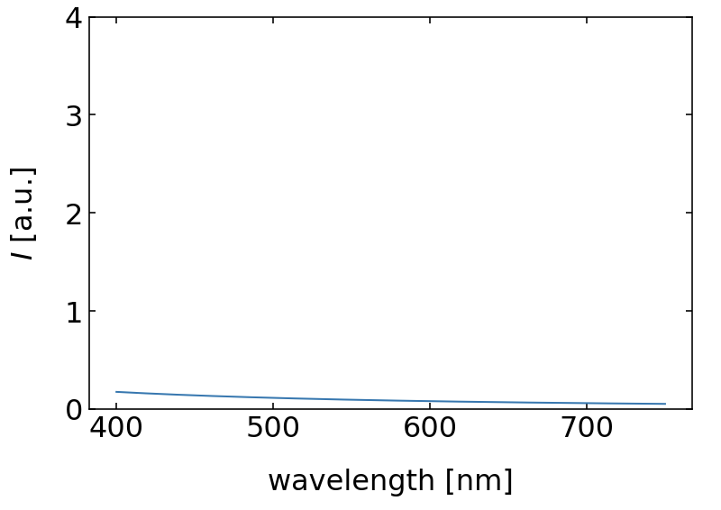
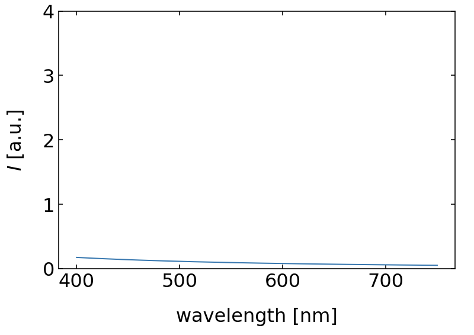

This page was generated from `source/notebooks/L10/Interference.ipynb`_.

Thin Film Interference¶
The reflection and transmission of waves on a thin film can also be regarded as an interference of two waves. A light wave is incident on a thin film as depicted below. A part of the wave is reflected on the first boundary (1). Another part is transmitted through the first boundary and reflected at the second boundary to be transmitted in the same direction (2) as the first reflected part. Note that the lines and arrows denote the direction of the wavevector \(\vec{k}\) of the partial waves.
|
|---|
Fig.: Interference on a thin film considering two partial waves. |

This picture of a single reflection at each of the interfaces is certainly a simplification and in general we would have to consider an infinite number of reflections. But if we assume that the reflection is weak (e.g. 4% as for the air/glass interface), then the next reflection would just diminish the 4% to 4% of 4%, which is really weak. So the two wave interference may be a good model for weak reflections.
For the geometry shown in the figure above, we have just have a medium with \(n_1\) surrounding the film with \(n_2\). For this situation, we may calculate the path difference \(\Delta s\), the waves 1 and 2 have to travel.
We find
where the first term contains the distance traveled by wave 2 inside the water film. The second term is the additional distance wave 1 has to travel after being reflected which is indicated by the dotted line inbetween.
We can now introduce Snells law into the calculation, as Snells law must be also valid in wave optics and also in electromagnetic optics. With \(n_1\sin(\alpha)=n_2\sin(\beta)\) and setting \(n_1=1\) and \(n_2=n\) we can rewrite the path difference as
With that we can now also calculate the phase shift \(\Delta \phi\) that is introduced through the path difference, which reads
You may now wonder about the second part \(\pi\), which is not coming from a path difference. This addition phase shift occurs due to the reflection at an interface with higher refractive index. For such a reflection, there is always a phase jump of \(\phi\), which we have to consider. This is not occuring for the reflection at the second boundary, as we there go from a higher refractive index to a lower one.
To get to know the properties of thin film interference a bit better we consider the normal incidence \(\alpha=0\), which leaves us with
In case we are searching for constructive interference, this phase shift should correspond to an integer multiple of \(2\pi\), e.g. \(\Delta \phi =m2\pi\). From the last equation we see already, that for \(d=0\), we have in principle a residual phase shift of \(\pi\), meaning that there is only destructive interference. Yet a film thickness of zeor does not really make sense.
We would like to discuss two different situations in the following in an example. For that we either look at the thickness under which a constructive interference at a wavelength of \(\lambda\) occurs, or we ask what kind of wavelength do show constructive interference for a fixed thickness.
Fixed Wavelength
For a fixed wavelength of \(\lambda\) we obtain a corresponding thickness for the constructive interference of
Fixed Thickness
For a fixed thickness of \(d\) we obtain constructive interference at
We can now have a look at two examples.
Example 1 - d=100 nm
If we look at a film thickness of \(d=100\) nm and a film of \(n=1.33\), which corresponds to water we obbtain constructive interference for
or
which yields for different values of \(m\)
\(m=1\): 532 nm
\(m=2\): 177 nm
\(m=3\): 106 nm
and so on. We see therefore that the longest wavelength to create constructive interference is \(532\) nm, which is green light. The next longest wavelength is 177 nm, which is not visible anymore, so the reflection of a \(d=100\) nm film would look green. The left plot in the figure below shows the intensity distribution over wavelength where you recognize that the maximum is very broad.
|
|---|
Fig.: Reflection from a 100 nm (left) and a 10 nm (right)thin water film. |
 
An interesting effect is appearing, when the thickness of the water film get very thin. We may ask, when is no constructive interference observed. We therefore set the wavelength of the constructive interefence to \(\lambda_{max}=400\, {\rm nm}\) and calculate the film thickness for which this occurs.
So for film thickness of water thinner than 75 nm, there is no constructive interference of the reflected light from the two boundaries in the visible region anymore. There will be still a reflection but no specific color. If the film gets even thinner, the intensity of the reflected light is further diminished by desctructive interference and whe obtain no reflection as shown on the right side of the above figure for a \(d=10\) nm film. Such thin films, which do not show any reflection are called Newton black films.